1. Использование сервиса mysvn.ruFalse
Note
Использование svn-хранилища рассматривается в упрощенной форме (не используются возможности тегирования tag и ветвления branch).
Для начала работы:
- зарегистрируйтесь на сервисе mysvn.ru;
- создайте пользователя, под учетыми данными которого вы будете работать с хранилищем;
- создайте хранилище и дайте вашему пользователю права на запись в это хранилище.
1.1. Регистрация на сервисе mysvn.ruFalse
Todo
Снять картинки и кратко описать.
1.2. НавигацияFalse
Основным экраном для управления хранилищами является Панель управления.
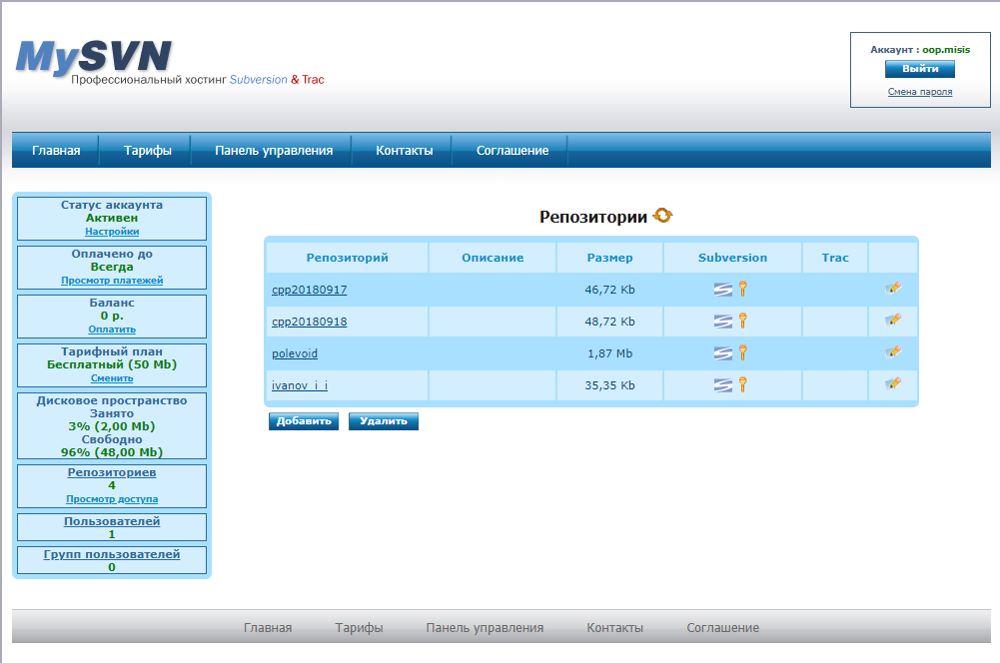В левой части расположено главное меню
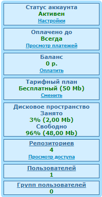чере которое по ссылке Пользователей
можно перейти к экрану Пользователи или перейдя по ссылке Репозиториев
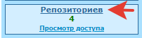открыть экран Репозитории.
1.3. Экран ПользователиFalse
Экран Пользователи отображает список всех зарегистрированных пользователей и позволяет создавать пользователей, редактировать настройки для существующих пользователей (например, поменять пароль) и удалять пользователей.
Экран Пользователи
1.4. Экран РепозиторииFalse
Экран Репозитории отображает список всех хранилищ и позволяет создавать новые хранилища, редактировать настройки для существующих и удалять хранилища.
Экран Репозитории
Имена хранилищ являются гиперссылками, по которым можно перейти к полным описаниям и настройкам соответствующих хранилищ.
Пример
Пример информации о хранилище и доступ к настройкам представлен на следующей иллюстрации.
Экрана подробной информации о хранилище и настроек
Наиболее полезными являются раздел Subversion в котором можно узнать адрес хранилища (поле Ссылка) и размер базы хранилища (поле Размер).
1.5. Создание нового пользователяFalse
Перейдите к экрану Пользователи и нажмите кнопку Добавить.
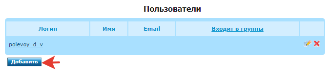Note
К списку пользователей всегда можно перейти по ссылке Пользователей в главном меню (левая часть экрана).
Укажите имя пользователя (login), пароль (password) и нажмите кнопку Сохранить.
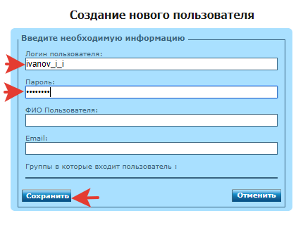Если все прошло успешно, то должен открыться экран Пользователи, накотором созданный пользователь будет в списке зарегистрированных.
1.6. Создание нового хранилищаFalse
Откройте закладку с перечислением хранилищ
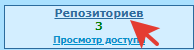Нажмите на кнопку Добавить.
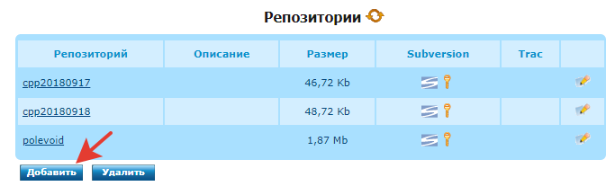В форме Создание нового репозитория выберите вариант Создание пустого репозитория (умолчательное значение) и нажмите кнопку Далее.
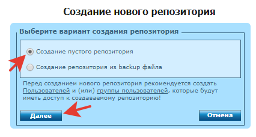Укажите название хранилища, снимите отметку Создать директории trunk,branches,tags и нажмите кнопку Создать.
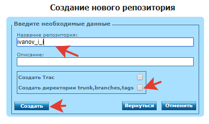Note
Студентам рекомендуется в качестве названия хранилища указывать транслитерированные (латиницей) фамилию и инициалы в нижнем регистре через подчеркивание. Например: Иванов И.И. -> ivanov_i_i.
Important
Если вы выберите Создать директории trunk,branches,tags (умолчательное значение), то потом необходимо вручную удалить папки trunk, branches, tags, которые будут созданы автоматически.
Если все прошло успешно, то должен появиться экран следующего вида.
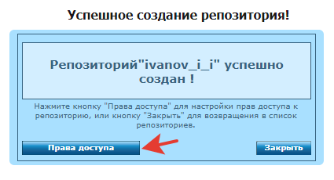Далее необходимо настроить права доступа к созданному хранилищу, нажав кнопку Права доступа.
1.7. Настройка прав доступа к хранилищуFalse
Умолчательно к созданному хранилищу разрешен анонимный доступ на чтение.
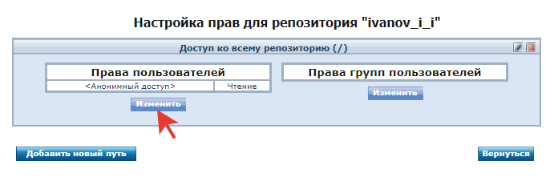Нажмите кнопку Изменить и перейдите к форме Изменение прав пользователей, в которой перечислены все зарегистрированные пользователи.
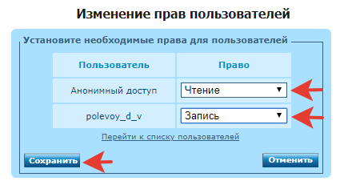Установите дял каждого пользователя в соответсвующем ему выпадающем списке требуемые права доступа и нажмите кнопку Сохранить.
Note
Если вы еще не создали пользователя, который будет обладать правами записи в зарнилище, то вам необходимо воспользоваться ссылкой Перейти к списку пользователей и создать нового пользователя.
Note
В рамках учебного курса рекомендуется использовать имя пользователя, которое совпадает с именем хранилища (транслитерированные латиницей фамилия и инициалы в нижнем регистре через подчеркивание).
1.8. Изменение настроек пользователяFalse
Todo
описать
1.9. Удаление пользователяFalse
Todo
описать
1.10. Изменение настроек хранилищаFalse
Todo
описать
1.11. Удаление хранилищаFalse
Todo
описать